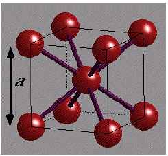

문제 5
배터리에 널리 사용되는 리튬은 금속 결정 물질로 상온, 상압에서 아래와 같은 체심 입방 구조 (body centered cubic structure; bcc)를 갖는다.

(1) 고체 리튬을 단원자 기체의 리튬으로 해리하는 아래의 화학 반응을 생각해보자.
\[\text{Li (bcc 결정)} \rightarrow \text{Li (단원자 기체)}\]
체심 입방 구조 내에서 그림과 같이 리튬 원자가 가장 근접한 이웃 리튬 원자와 공유 결합을 하고 있다고 단순히 가정해보자. 그리고 단순히 리튬 이합체 (Li-Li)의 결합 에너지가 24 kcal/mol 인 점과 체심 입방 구조의 원자당 배위수를 이용하여 위 화학 반응식의 반응 에너지를 예측해보시오.
(2) 실제 실험적으로 고체 리튬을 단원자 리튬으로 해리하는 화학 반응 에너지는 37.6 kcal/mol 이다. 이합체 결합 에너지로부터 예측한 값과 실제 실험값을 비교하고, 차이가 있다면 그 원인에 대해 서술하시오.
(전체 3점)